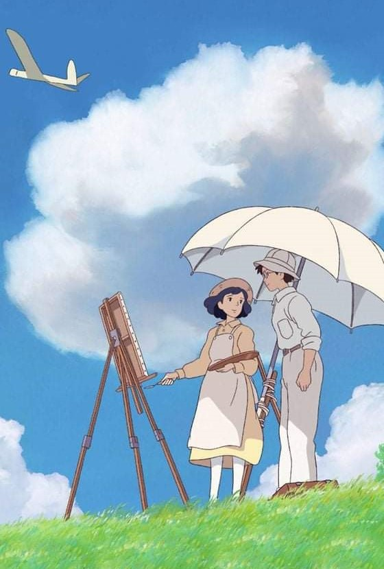

|
Trên đời này có rất nhiều việc bạn cho rằng ngày mai có thể tiếp tục làm.
Có rất nhiều người bạn cho rằng ngày mai có thể gặp lại.
Thế nên trong lúc bạn tạm thời buông bỏ hoặc tạm thời quay người lại, tất cả những gì trong lòng bạn chỉ có niềm hy vọng được gặp lại vào ngày mai.
Có lúc thậm chí chẳng thể cảm nhận được niềm hy vọng này.
Bởi vì bạn cho rằng nếu đã từng ngày trôi qua như thế thì tất nhiên cũng sẽ trôi qua từng ngày như thế. Hôm qua, hôm nay và ngày mai hẳn là chẳng có gì khác nhau cả.
Nhưng sẽ có một lần như thế, vào giây phút bạn buông tay và xoay người đi, có việc sẽ hoàn toàn thay đổi.
Mặt trời đã lặn mà trước lúc nó mọc lên lại, có vài người sẽ vĩnh biệt bạn từ đây.
Chúng ta vẫn luôn cho rằng cái gọi là tạm biệt, chắc chắn là một nghi thức long trọng. Thế nên chúng ta vẫn luôn chờ đợi.
Chờ một cái ôm ấm áp, chờ một chầu say ngất ngây, chờ một tiếng tạm biệt từ đáy lòng, chờ đến cuối cùng chúng ta mới phát hiện đa phần lời tạm biệt trong đời người, đều là lặng yên không một tiếng động.
Thì ra lần gặp gỡ đấy, đã là lần cuối cùng.
Vốn dĩ cho rằng sẽ có rất nhiều thời gian.
Thế nên, thế nên ngày sau chưa chắc đã dài lâu, núi non cũng chưa chắc trùng phùng.

"Hãy đi gặp người bạn muốn gặp, tranh thủ vầng dương đang rực nắng,
gió thoảng nhẹ bay, nhân lúc người ấy vẫn còn đó và bạn vẫn chưa già"
|
|